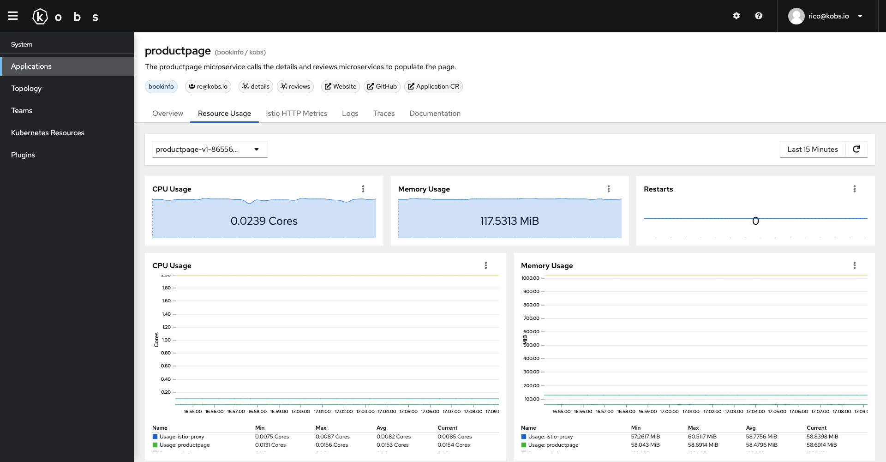

Dashboards
Dashboards are defined via the Dashboard Custom Resource Definition. Dashboards are used to add additional information for applications, users and teams via all the configured plugins.
Specification
| Field | Type | Description | Required |
|---|---|---|---|
| description | string | Provide a descriptions for the dashboard with additional details. | No |
| hideToolbar | boolean | If this is true the toolbar will be hidden in the dashboard. |
No |
| placeholders | []Placeholder | A list of placeholders, which can be directly set by the user. | No |
| variables | []Variable | A list of variables, where the values are loaded by the specified plugin. | No |
| rows | []Row | A list of rows for the dashboard. | Yes |
Placeholder
| Field | Type | Description | Required |
|---|---|---|---|
| name | string | The name for the placeholder, which can be used in the dashboard via {% .<placeholder-name> %}. |
Yes |
| description | string | An optional description, to provide more information how the placeholder is used. | No |
Variable
| Field | Type | Description | Required |
|---|---|---|---|
| name | string | The name of the variable, which can be used in the dashboard via {% .<variable-name> %}. |
Yes |
| label | string | An optional label, which is shown in the UI instead of the variable name. | No |
| hide | boolean | Hide the variable in the UI. | No |
| plugin | Plugin | The plugin, which should be used to get the values for the variable. | Yes |
Note
Dashboards are also supporting some special variables, which always can be used and must not be defined by a users. These variables are:
__timeStart: The start time of the selected time range in seconds. This variable can be used via{% .__timeStart %}in a dashboard.__timeEnd: The end time of the selected time range in seconds. This variable can be used via{% .__timeEnd %}in a dashboard.
Row
| Field | Type | Description | Required |
|---|---|---|---|
| title | string | The title for a row. | No |
| description | string | The description for the row, to provide additional details about the content of the row. | No |
| size | number | The size of the row. This must be a value between 1 and 12. The default value is 2. You can also use the special value -1 to not limit the height of the row. Note: When a dashboard makes use of the -1 value the Intersection Observer API is disabled, so that all dashboard panels are loaded at once. |
No |
| panels | []Panel | A list of panels for the row. | Yes |
Panel
| Field | Type | Description | Required |
|---|---|---|---|
| title | string | The title of the panel. | Yes |
| description | string | An optional description with additional information about the panel. | No |
| colSpan | number | The number of columns, which should be used by the panel. This must be a number between 1 and 12. The default value is 12. |
No |
| rowSpan | number | The number of rows, which should be used by the panel. This must be a number between 1 and 12. The default value is 1. |
No |
| plugin | Plugin | The plugin which should be displayed in the panel. | Yes |
Example
The following dashboard can be used to display the resource usage of the containers in a pod. It can be used within an application and can be customized via the namespace and pod placeholders.
---
apiVersion: kobs.io/v1
kind: Dashboard
metadata:
name: resource-usage
namespace: kobs
spec:
description: Resources Usage of Pods
placeholders:
- name: namespace
description: Namespace for the Pods
- name: pod
description: Pod selector
variables:
- name: var_pod
label: Pod
plugin:
name: prometheus
type: prometheus
options:
type: labelValues
label: pod
query: container_cpu_usage_seconds_total{namespace="{% .namespace %}", image!="", pod=~"{% .pod %}", container!="POD", container!=""}
allowAll: false
rows:
- size: 1
panels:
- title: CPU Usage
colSpan: 4
plugin:
name: prometheus
type: prometheus
options:
type: sparkline
unit: Cores
queries:
- query: sum(rate(container_cpu_usage_seconds_total{namespace="{% .namespace %}", image!="", pod=~"{% .var_pod %}", container!="POD", container!=""}[2m]))
- title: Memory Usage
colSpan: 4
plugin:
name: prometheus
type: prometheus
options:
type: sparkline
unit: MiB
queries:
- query: sum(container_memory_working_set_bytes{namespace="{% .namespace %}", pod=~"{% .var_pod %}", container!="POD", container!=""}) / 1024 / 1024
- title: Restarts
colSpan: 4
plugin:
name: prometheus
type: prometheus
options:
type: sparkline
queries:
- query: kube_pod_container_status_restarts_total{namespace="{% .namespace %}", pod=~"{% .var_pod %}"}
- size: 3
panels:
- title: CPU Usage
colSpan: 6
plugin:
name: prometheus
type: prometheus
options:
type: line
unit: Cores
legend: table
queries:
- label: "Usage: {% .container %}"
query: sum(rate(container_cpu_usage_seconds_total{namespace="{% .namespace %}", image!="", pod=~"{% .var_pod %}", container!="POD", container!=""}[2m])) by (container)
- label: "Request: {% .container %}"
query: sum(kube_pod_container_resource_requests{namespace="{% .namespace %}", resource="cpu", pod=~"{% .var_pod %}", container!="POD", container!=""}) by (container)
- label: "Limits: {% .container %}"
query: sum(kube_pod_container_resource_limits{namespace="{% .namespace %}", resource="cpu", pod=~"{% .var_pod %}", container!="POD", container!=""}) by (container)
- title: Memory Usage
colSpan: 6
plugin:
name: prometheus
type: prometheus
options:
type: line
unit: MiB
legend: table
queries:
- label: "Usage: {% .container %}"
query: sum(container_memory_working_set_bytes{namespace="{% .namespace %}", pod=~"{% .var_pod %}", container!="POD", container!=""}) by (container) / 1024 / 1024
- label: "Request: {% .container %}"
query: sum(kube_pod_container_resource_requests{namespace="{% .namespace %}", resource="memory", pod=~"{% .var_pod %}", container!="POD", container!=""}) by (container) / 1024 / 1024
- label: "Limits: {% .container %}"
query: sum(kube_pod_container_resource_limits{namespace="{% .namespace %}", resource="memory", pod=~"{% .var_pod %}", container!="POD", container!=""}) by (container) / 1024 / 1024
- title: Network
size: 3
panels:
- title: Bandwidth
colSpan: 12
plugin:
name: prometheus
type: prometheus
options:
type: area
unit: bytes/s
queries:
- label: Received
query: sum(irate(container_network_receive_bytes_total{namespace="{% .namespace %}", pod="{% .var_pod %}"}[2m])) by (pod)
- label: Transmitted
query: -sum(irate(container_network_transmit_bytes_total{namespace="{% .namespace %}", pod="{% .var_pod %}"}[2m])) by (pod)
- title: Rate of Packets
colSpan: 6
plugin:
name: prometheus
type: prometheus
options:
type: area
unit: bytes/s
queries:
- label: Received
query: sum(irate(container_network_receive_packets_total{namespace=~"{% .namespace %}", pod=~"{% .var_pod %}"}[2m])) by (pod)
- label: Transmitted
query: -sum(irate(container_network_transmit_packets_total{namespace=~"{% .namespace %}", pod=~"{% .var_pod %}"}[2m])) by (pod)
- title: Rate of Packets Dropped
colSpan: 6
plugin:
name: prometheus
type: prometheus
options:
type: area
unit: bytes/s
queries:
- label: Received
query: sum(irate(container_network_receive_packets_dropped_total{namespace=~"{% .namespace %}", pod=~"{% .var_pod %}"}[2m])) by (pod)
- label: Transmitted
query: -sum(irate(container_network_transmit_packets_dropped_total{namespace=~"{% .namespace %}", pod=~"{% .var_pod %}"}[2m])) by (pod)
- title: "Resource Usage for all Pods"
panels:
- title: Table
plugin:
name: prometheus
type: prometheus
options:
type: table
queries:
- label: "{% .pod %}"
query: sum(rate(container_cpu_usage_seconds_total{namespace="{% .namespace %}", image!="", pod=~"{% .pod %}", container!="POD", container!=""}[2m])) by (pod)
- label: "{% .pod %}"
query: sum(kube_pod_container_resource_requests{namespace="{% .namespace %}", resource="cpu", pod=~"{% .pod %}", container!="POD", container!=""}) by (pod)
- label: "{% .pod %}"
query: sum(kube_pod_container_resource_limits{namespace="{% .namespace %}", resource="cpu", pod=~"{% .pod %}", container!="POD", container!=""}) by (pod)
- label: "{% .pod %}"
query: sum(container_memory_working_set_bytes{namespace="{% .namespace %}", pod=~"{% .pod %}", container!="POD", container!=""}) by (pod) / 1024 / 1024
- label: "{% .pod %}"
query: sum(kube_pod_container_resource_requests{namespace="{% .namespace %}", resource="memory", pod=~"{% .pod %}", container!="POD", container!=""}) by (pod) / 1024 / 1024
- label: "{% .pod %}"
query: sum(kube_pod_container_resource_limits{namespace="{% .namespace %}", resource="memory", pod=~"{% .pod %}", container!="POD", container!=""}) by (pod) / 1024 / 1024
columns:
- name: pod
title: Pod
- name: value-1
title: CPU Usage
unit: Cores
- name: value-2
title: CPU Requests
unit: Cores
- name: value-3
title: CPU Limits
unit: Cores
- name: value-4
title: Memory Usage
unit: MiB
- name: value-5
title: Memory Requests
unit: MiB
- name: value-6
title: Memory Limits
unit: MiB
